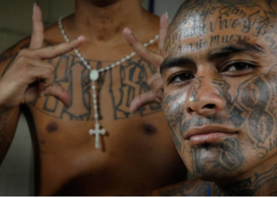

Exportando la MS y el barrio 18 a sur de México
En Chiapas pasan cosas como esta: cinco jóvenes de entre 18 y 24 años torturaron y asesinaron a Rudy Alonso Pacheco Niño, de 18 años, en el municipio de Acacoyagua, el pasado 26 de junio.
Dos de los presuntos asesinos, detenidos un mes después, son guatemaltecos, uno salvadoreño y tres mexicanos. Todos miembros de la mara Barrio-18.
Su víctima, a su vez, era mexicano que pertenecía a la“Mara Salvatrucha” (MS-13), de acuerdo con las autoridades.
Con la atención siempre puesta en su frontera norte, México olvida que el sur también existe en el mapa de la violencia.
Héctor Castillo, investigador de la UNAM y especialista en grupos juveniles, lo comprobó al participar en un programa gubernamental que se llamó Hábitat, y que puso en marcha el gobierno de Felipe Calderón en distintas ciudades del país para prevenir la violencia.
Entre esas ciudades estaba Tapachula, capital de Chiapas y una de las ciudades más afectadas por la actividad de las “maras”.
“El propósito era intervenir con los jóvenes, a partir de distintas actividades, para alejarlos de las pandillas, porque uno no puede llegar y enfrentar así nada más a las 'maras'”, explica.
Por algo la Comisión Nacional de los Derechos Humanos (CNDH), desde 2004, consideró a las “maras” como “un problema que atenta no solamente contra la seguridad pública de las personas, sino también contra la seguridad nacional del Estado”.
Pandillas en expansión
Hace años que México detectó las actividades de grupos de “maras” en el país. Desde 1996 al menos, de acuerdo con la CNDH y Héctor Castillo.
Su presencia, sin embargo, progresivamente se expandió hasta llegar a 23 estados del país y sumar más 5.000 integrantes hasta 2005, año en que la CNDH hizo el estudio.
En este advertía además que en Chiapas habían nacido ya otras “clicas” (grupos considerados como “familias” que pertenecen a las “maras”), que en 2001 ya sumaban 200 grupos con al menos 3.000 pandilleros.
El problema entonces no es reciente, afirman especialistas. Y tampoco simple, aclaran. El fenómeno de las pandillas centroamericanas que operan en México es una mezcla que combina migración, pobreza, crimen y corrupción, y que exhibe la falta de políticas públicas en la región y las fallidas estrategias de seguridad como el Plan Frontera Sur, el cual consiste básicamente en el reforzamiento de la seguridad policial y militar.
Esta estrategia, sin embargo, no ha disuadido la operación de las pandillas en Chiapas. Y aun peor, al parecer su número y sus actividades ha aumentado en los últimos dos años: de 13 supuestos pandilleros detenidos en 2016, el número se elevó a 161 hasta febrero de 2018, de acuerdo con la Secretaría de Seguridad y Protección Ciudadana de Chiapas.
También aumentaron los homicidios vinculados a los enfrentamientos entre pandillas: de 18 ocurridos en 2016 pasaron a 22 en 2017 y este año suman 7, según las cifras oficiales.
Los especialistas advierten, sin embargo, que alrededor de estos números oficiales hay una “cifra negra”, que impide conocer el total de los asesinatos o hechos violentos relacionados con las “maras”, porque la mayoría de la veces sus delitos involucran migrantes sin documentos.
Para enfrentar el problema – que afecta sobre todo a los municipios de Suchiate, Tapachula, Mapastepec y Tuxtla Gutiérrez– las autoridades de Chiapas pusieron en marcha el Programa Antipandillas, que opera desde la Fiscalía de Inmigrantes.
Esta instancia colabora con los gobiernos de Guatemala y El Salvador, y ha detectado los vínculos entre las maras de Centroamérica y las que operan en México.
Incluso advierten que desde cárceles como “El Infiernito”, en el departamento de Escuitla, Guatemala, o desde los centros de reinserción social para sentenciados 14 de Cintalapa y 3 de Tapachula salen las órdenes de asesinatos de los jefes maras a sus “clicas”.
Así lo comprobaron cuando detuvieron a los asesinos de Rudy Alonso. De acuerdo con la investigación, en “El Infiernito” está recluido Fernando Muñoz Sinar, conocido como “El Happy” y/o “El Ratón”, a quien identifican como el actual líder de la “clica” llamada “Sólo para Locos”, de “Barrio 18”.
En 2017 este líder contactó a Juan Carlos N, “El Pastrana”, que se encuentra en el centro penitenciario número 14 de Cintalapa para formar una alianza para la venta de droga en toda la región del río Suchiate, la Costa de Chiapas y Tapachula.
Para ellos operaba Yener Aldair, conocido como “El Panzas”, de 19 años, guatemalteco, quien encabezó el asesinato del joven mexicano vinculado con “MS-13” en Acacoyagua, por órdenes de “El Happy”.
Pero la violencia en Chiapas no sólo ocurre entre pandillas. Los más vulnerables son los migrantes centroamericanos que salen de sus países para huir de estas.
La doctora Ailsa Winton, investigadora de El Colegio de la Frontera Norte (Ecosur), explica que desde hace un par de años ha sucedido que los migrantes que abandonan sus países por el acecho de las pandillas, se encuentran en Chiapas a los mismos de quienes huyen.
“Se comenzó a escuchar que estos migrantes se habían topado con quienes los habían amenazado allá (en sus países) o que reconocía a pandilleros de su país aquí en México, en espacios públicos como el parque central de Tapachula o los albergues, donde las personas encargadas de estos han alertado de esta situación”, explica.
Esto sucede porque los pandilleros siguen a sus víctimas, las persiguen hasta México, dice. Y aunque este tipo de situaciones ya se conocían, agrega, no hubo respuesta de las autoridades: ni atención ni protección para los migrantes, y tampoco investigación.